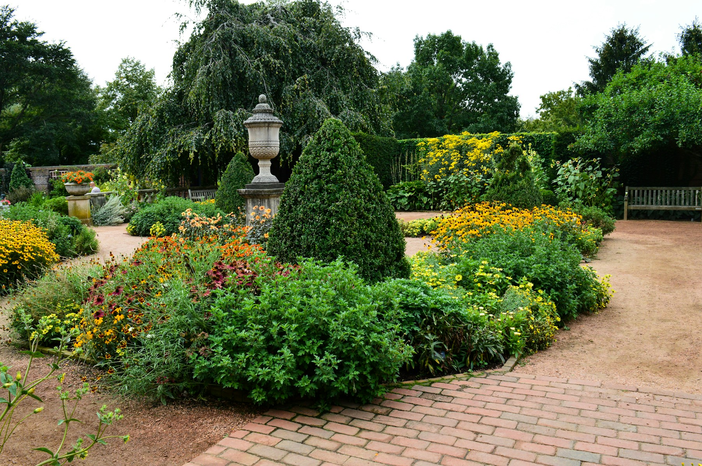
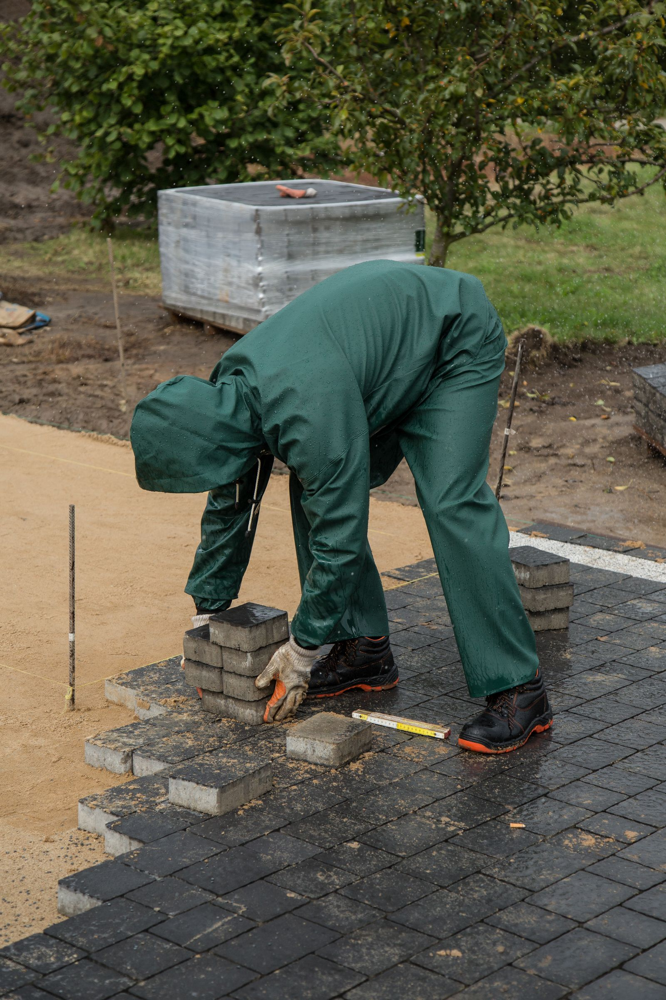
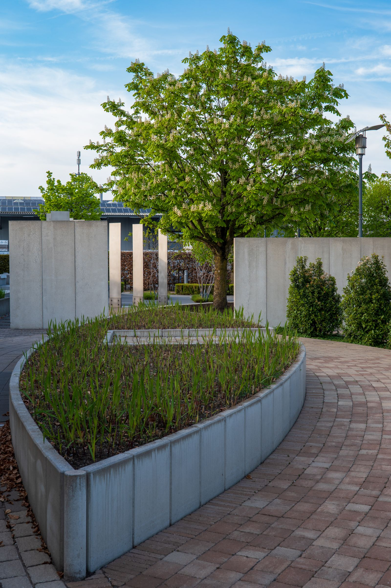

Your new website
A website that works on phones and computers, showcasing your services, project photos and contact details.
PREPARED FOR KJP LANDSCAPES & GROUNDWORKS
A place to show what you do, help local customers find you, and turn interest into enquiries.
Explore the three designsTHE WORK SCOPE
A website that works on phones and computers, showcasing your services, project photos and contact details.
Choose and register a suitable domain name for KJP, then connect it to your website.
Create or claim your business profile, add your details, and help with Google's verification process.
Host and manage the website for £50 per month, keeping your business information and content up to date.
Domain availability and registration costs to be agreed before purchase. Google profile verification requires the business owner's involvement.
THREE POSSIBLE DIRECTIONS
These are starting points. Colours, wording and photos can all be tailored to KJP.
Forest green · warm cream · a focus on finished gardens

LANDSCAPING & GROUNDWORKS · SUNDERLAND
Make space for slow mornings, family gatherings and a garden you're proud of.
BUILT AROUND YOUR HOME
The feel: Friendly, established and approachable. Finished project photographs take centre stage.
Charcoal · bright orange · clear services and strong type
YOUR NEXT PROJECT STARTS HERE.
Landscaping, paving and groundworks.
Let's put your plans into action.

FROM THE GROUND UP.Practical spaces. Lasting impressions.Example photographyThe feel: Direct, confident and practical. A clear way to give landscaping and groundworks equal weight.
Stone · deep brown · an understated, premium feel
OUTDOOR SPACES, THOUGHTFULLY MADE.
Beautifully practical landscaping
for everyday life in Sunderland.

A DIFFERENT PERSPECTIVE ON YOUR OUTDOORS.Example photographyFrom the first ideas to the finishing touches,
your outdoor space starts with a conversation.
The feel: Calm and refined. Larger photographs and less text let the quality of the finished work lead.
THE NEXT STEP
Pick a favourite, or combine the elements you like. We'll shape the chosen design around your business and your own project photos.